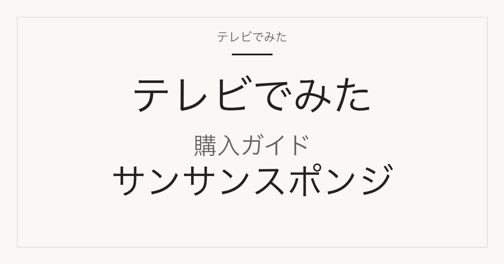

購入ガイド
サンサンスポンジ ブラックはどこで買える？単品はある？ノーマルとソフトの違い
サタプラ 2026年9月5日 キッチンスポンジ 総合1位で紹介

どこで買える？
サンサンスポンジ ブラック（ノーマル）は、ダイニチ・コーポレーションのメーカー公式通販（dainichi-corp.co.jp）とダイニチ楽天市場店で買えます。どちらも基本は「4個セット」で、公式通常価格は1,584円（税込）。楽天は2026-09-09 14:29時点でスーパーセール表示の1,425円（送料込み）でした。スポンジ1個だけの単品出品は公式・楽天とも確認できず、1個から買うなら固形洗剤100gが付く「お試しセット」1,000円が公式通販・楽天公式店で1個から買える商品です（確認した範囲）。店頭ではメーカー公式の取扱店舗一覧にロフトのほかハンズ・百貨店など全国の取扱店舗一覧が載っています。

この記事には広告・アフィリエイトリンクが含まれます。正式商品名・型番・容量はメーカー公式または正規販売ページで確認しています。価格・送料・在庫は確認日時時点のもので変わります。価格の安さ・在庫の有無・配送日数は、確認した範囲と日時を添えた事実だけを書き、断定していません。
番組で紹介された商品の正式名称と仕様
| メーカー | ダイニチ・コーポレーション |
|---|---|
| 正式商品名 | サンサンスポンジ 4個セット（選べる8カラー） ブラック（ノーマル） |
| 型番・品番 | 楽天商品番号 TSS04B（ダイニチ楽天市場店・4個セット）／メーカー公式SKU 4571342441005 |
| JAN | 4571342441005 |
| 容量・サイズ | 1袋4個入り（1個 約H75×W115×D33mm・ポリウレタン・日本製・圧縮包装） |
| バリエーション | 硬さは「ノーマル」と「ソフト」の2タイプ（別途Lサイズあり）。ノーマル：ブラック（4571342441005）／シルキーグレー（4571342441678）／グリーン（4571342441012）。ソフト：プレミアムブラック（4571342441029）／ホワイト（4571342441036）／ピンク（4571342441043）／オレンジレッド（4571342441050）／レモンイエロー（4571342441845）。いずれも4個セット1,584円（税込・メーカー公式通販、2026-09-09 14:29確認）。番組で紹介された「ブラック」はノーマルタイプ。 |
メーカー公式通販の商品ページ（2026-09-09 14:29確認）の記載：サイズ約H75×W115×D33mm、硬さ/色はノーマルタイプ（ブラック、シルキーグレー、グリーン）とソフトタイプ（プレミアムブラック、バニラホワイト、ピンク、オレンジレッド、レモンイエロー）、原産：日本製、素材：ポリウレタン、圧縮加工のため開封すると膨らむ。Lサイズは約H80×W150×D40mm。1個売りの通常価格は公式・楽天とも未確認。
販売先ごとの入数・価格・送料
| 販売先 | 商品名・型番 | 入数 | 確認時価格 | 送料 | 確認日時 |
|---|---|---|---|---|---|
| ダイニチ楽天市場店（メーカー公式） | サンサンスポンジ 4個セット 全9色（商品番号 TSS04B）— 選択肢「ブラック（ノーマル）」を選ぶ | 4個 | 1,425円（税込・スーパーセール表示。当店通常価格 1,584円） | 送料込み（ページ表記「送料無料」） | 2026-09-09 14:29 |
| ダイニチ楽天市場店（メーカー公式） | サンサンスポンジ お試し1000円セット（スポンジ1個＋固形洗剤サンセブンハイアール100g）— 「ブラック（ノーマル）」選択可。スポンジ単品ではなく洗剤同梱 | スポンジ1個＋洗剤100g | 1,000円（税込） | 送料込み（ページ表記「送料無料」） | 2026-09-09 14:29 |
| ダイニチ楽天市場店（メーカー公式） | サンサンスポンジ 8個セット（4個セット×2組・商品番号 TSS08B）— 「ブラック（ノーマル）×ブラック（ノーマル）」の組合せあり | 8個（4個×2組） | 2,765円（税込・スーパーセール表示。当店通常価格 3,073円） | 送料込み（ページ表記「送料無料」） | 2026-09-09 14:29 |
| ダイニチ楽天市場店（メーカー公式） | サンサンスポンジ Lサイズ 2個セット ブラック／グリーン（商品番号 TSSBL4）— 別サイズ（約H80×W150×D40mm） | 2個 | 1,452円（税込） | 送料込み（ページ表記「送料無料」） | 2026-09-09 14:29 |
| ダイニチ・コーポレーション公式通販（sunsunsponge / dainichi-corp.co.jp） | 【TV紹介商品】サンサンスポンジ 4個セット（選べる8カラー）ブラック（ノーマル） SKU 4571342441005 | 4個 | 1,584円（税込） | 3,900円（税込）以上の購入で送料無料（サイト表記）。未満時の送料は未確認 | 2026-09-09 14:29 |
| ダイニチ・コーポレーション公式通販（sunsunsponge / dainichi-corp.co.jp） | サンサンスポンジ お試しセット ブラック（ノーマル）SKU 4571342441852 — スポンジ1個＋固形洗剤サンセブンハイアール100g | スポンジ1個＋洗剤100g | 1,000円（税込） | 3,900円（税込）以上の購入で送料無料（サイト表記）。未満時の送料は未確認 | 2026-09-09 14:29 |
| ダイニチ・コーポレーション公式通販（sunsunsponge / dainichi-corp.co.jp） | サンサンスポンジ Lサイズ 2個セット ブラック SKU 4571342441586 — 別サイズ | 2個 | 1,452円（税込） | 3,900円（税込）以上の購入で送料無料（サイト表記）。未満時の送料は未確認 | 2026-09-09 14:29 |
| ロフト各店（メーカー公式「取扱店舗一覧」掲載） | サンサンスポンジ（店頭取扱。公式一覧に「実際の取扱情報、在庫状況は各店舗へ直接お問い合わせください」と注記） | 未確認 | 未確認 | 店頭 | 2026-09-09 14:29 |
楽天の価格は2026-09-09 14:29時点でスーパーセール表示（4個セット1,425円、8個セット2,765円）。ページ内の「当店通常価格」は4個セット1,584円・8個セット3,073円で、メーカー公式通販の4個セット1,584円と一致します。楽天4件はいずれも売り切れ表示なし（soldout=0）。番組掲載価格396円は「4個セット1,584円÷4」と同額ですが、1個売りの出品は公式・楽天とも確認できていないため、単品価格とは断定していません。ダイニチ楽天市場店以外で4個入り1組を扱う楽天出店者は今回確認できませんでした。
似た商品・別容量との違い
「ブラック（ノーマル）」と「ブラック（ソフト）＝プレミアムブラック」は別タイプ
番組で紹介されたのはノーマルタイプのブラック（メーカー公式SKU/JAN 4571342441005）。ダイニチ楽天市場店の4個セットページには「ブラック（ノーマル）」と「ブラック（ソフト）」の両方の選択肢があり、後者はメーカー公式で「プレミアムブラック（ソフト）」（4571342441029）と表記される硬さ違いの商品です。価格はどちらも4個1,584円（公式通常価格）で同じなので、選択時は「ノーマル」の表記で見分けてください。
単品売りはなく、1個なら「お試しセット」（洗剤付き1,000円）
メーカー公式通販・ダイニチ楽天市場店とも、スポンジ1個だけの出品は確認できませんでした。1個から買える商品は「お試しセット」（スポンジ1個＋固形洗剤サンセブンハイアール100g）で1,000円（税込）。ブラック（ノーマル）を選べます（公式SKU 4571342441852）。スポンジのみが欲しい場合は4個セット1,584円が最小単位です。
ノーマルサイズとLサイズ
通常サイズは約H75×W115×D33mm。Lサイズは約H80×W150×D40mmで、2個セット1,452円（税込）、色はブラック（4571342441586）とグリーン（4571342441593）のみ、硬さはノーマルタイプのみです。番組の商品は通常サイズです。
4個セットと8個セットの価格差
ダイニチ楽天市場店の8個セット（4個セット×2組、商品番号TSS08B）は「ブラック（ノーマル）×ブラック（ノーマル）」の組合せが選べ、当店通常価格3,073円（2026-09-09 14:29時点はセール表示2,765円）。4個セット2袋分（1,584円×2＝3,168円）より通常価格で95円安い設定です。公式通販では4個入りに固形洗剤100gを付けたメール便セット（2,189円）もあります。
購入前によくある質問
番組の396円は単品の価格？
番組掲載価格396円は放送時点の番組調べです。メーカー公式・楽天とも4個セット1,584円（税込）が基本で、396円はこの1個あたりの金額と一致しますが、スポンジ1個だけの販売ページは確認できていません。1個で買う場合は固形洗剤付きのお試しセット1,000円になります。
楽天の4個セットで色を選ぶとき、どれが番組の商品？
「ブラック（ノーマル）」です。同じページにある「ブラック（ソフト）」はメーカー公式の「プレミアムブラック（ソフト）」に当たる硬さ違いの別商品なので、ノーマルを選んでください。
送料はかかる？
ダイニチ楽天市場店の4個セット・お試しセット・8個セット・Lサイズはいずれもページ表記が送料無料（送料込み）でした（2026-09-09 14:29確認）。メーカー公式通販は3,900円（税込）以上で送料無料と表記されており、4個セット1袋（1,584円）だけでは条件に届きません。未満時の送料額は未確認です。
店頭で買える店は？
メーカー公式の「取扱店舗一覧」には全国のロフトが掲載されています。ただし公式一覧に「実際の取扱情報、在庫状況は各店舗へ直接お問い合わせください」と注記があるので、来店前の確認をおすすめします。ドラッグストアの自社ECでの取り扱いは当サイトでは未確認です。
出典・確認方法
- メーカー公式通販「【TV紹介商品】サンサンスポンジ 4個セット（選べる8カラー）」（サイズ・タイプ・JAN・1,584円）
- メーカー公式通販「サンサンスポンジ お試しセット」（スポンジ1個＋固形洗剤100g・1,000円）
- メーカー公式通販「サンサンスポンジ Lサイズ 2個セット」（Lサイズ寸法・1,452円）
- メーカー公式「取扱店舗一覧」（ロフト各店）
- ダイニチ楽天市場店「サンサンスポンジ 4個セット」TSS04B
- ダイニチ楽天市場店「サンサンスポンジ お試し1000円セット」
- ダイニチ楽天市場店「サンサンスポンジ 8個セット」TSS08B
- ダイニチ楽天市場店「サンサンスポンジ Lサイズ 2個セット」TSSBL4
- テレビでみた「サタプラ スポンジ／サタプラ ラップ 総合ベスト3｜2026年9月5日」（番組順位・掲載価格の出典記事）
- MBS「サタプラ」ひたすら試してランキング キッチン用品2番勝負（番組公式）
公開：2026年9月9日／最終更新：2026年9月9日。掲載内容は確認日時時点の一次情報によります。